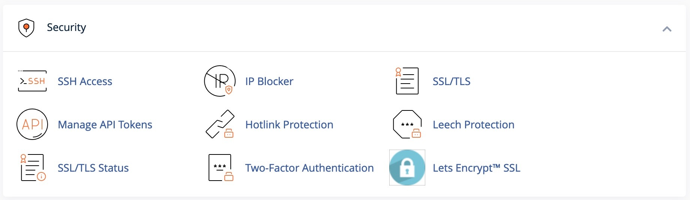
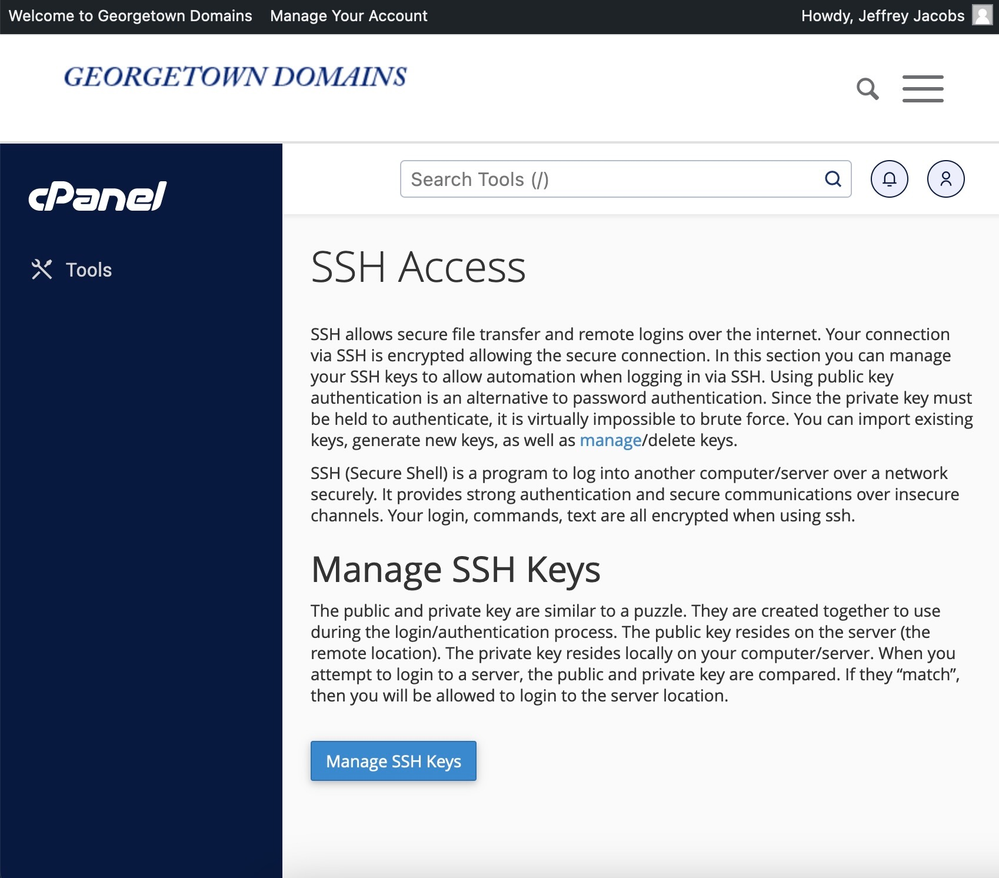
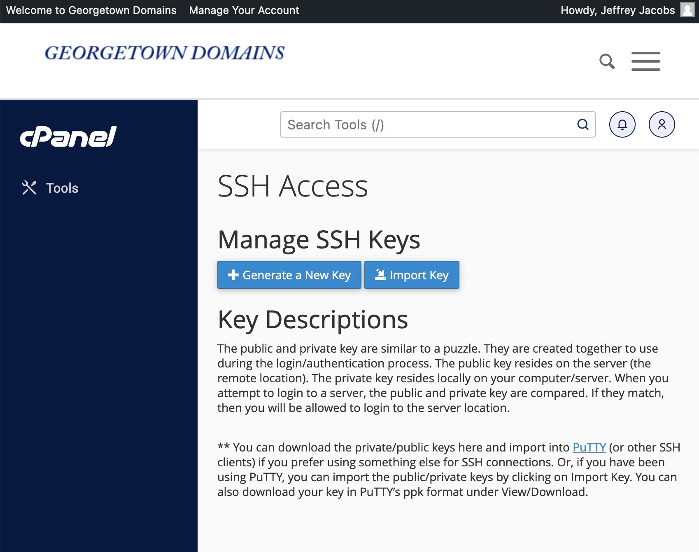
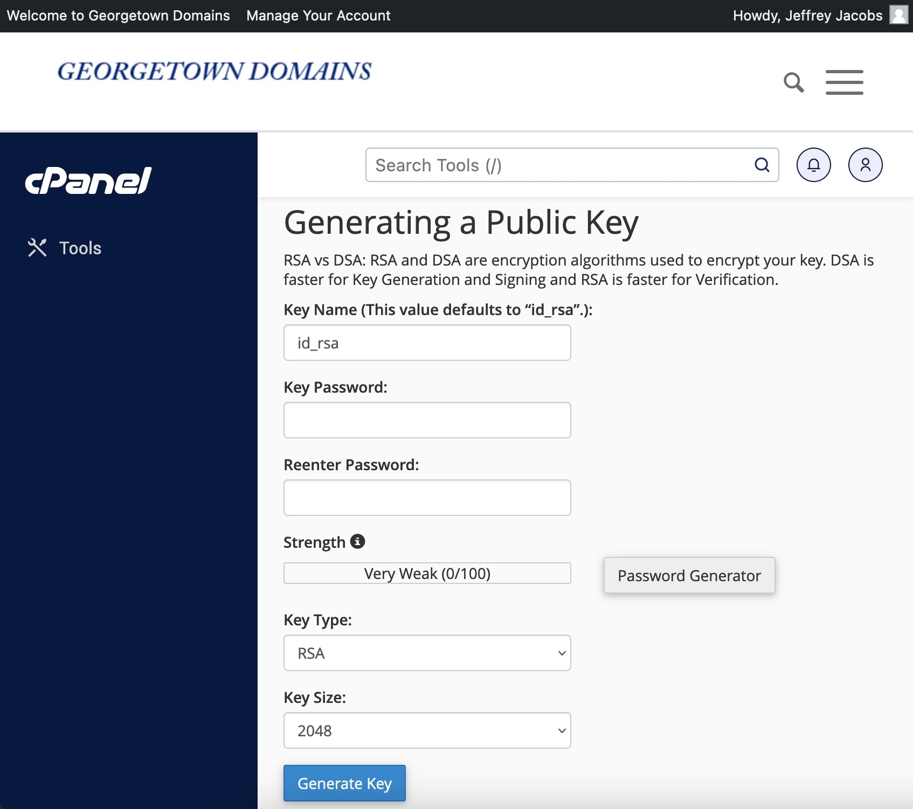
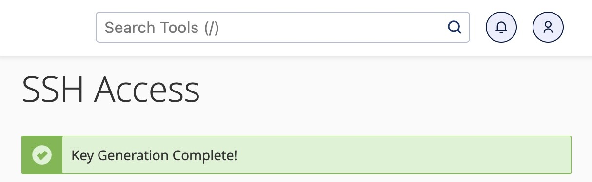
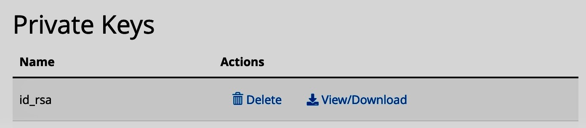
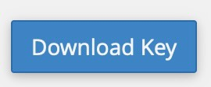
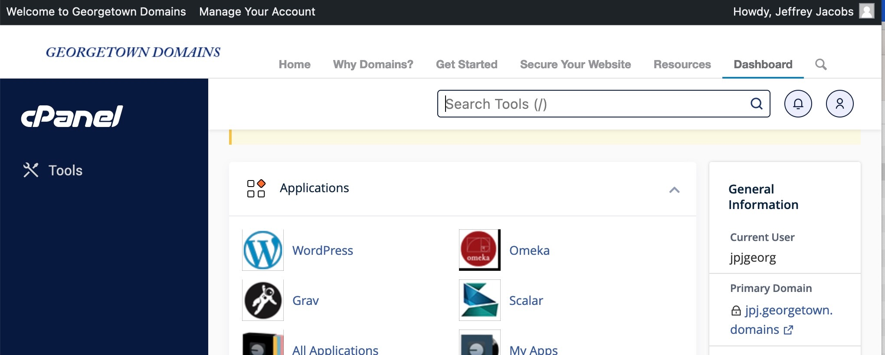

Troubleshooting SSH/SCP/rsync on Georgetown Domains
This tutorial assumes that you have already created a Georgetown Domains account. If you haven’t already done so, or you’re having trouble setting one up, please feel free to email me.
Step 1: Creating a Private Key
To remotely access your Georgetown Domains server from your local computer (outside of the method we used before, of accessing the terminal through a web interface), you will first need to create an SSH keypair, which you can think of in two steps:
- Georgetown Domains generates a “keyhole” on your Domains server, a Public Key, which allows your Domains server to be accessed remotely by someone who has the matching private key. Hence, it also creates a
- Private Key: a file (in this case, it will be called
id_rsa, with no file extension) that you save onto your computer, and you remember where you saved it, that will allow you to access your Georgetown Domains server remotely. There is a third piece of information here, which is the passphrase that will protect your private key from unauthorized usage (this is required by Georgetown, but is optional in general), but we’ll worry about that in a moment.
Let’s generate this keypair step-by-step:
Step 1.1: Opening the “SSH Access” Tool in Georgetown Domains
Open your browser and navigate to the Georgetown Domains dashboard. This is the interface that opens if you navigate to https://georgetown.domains/dashboard
If you scroll down to the category of tools with the heading “Security”, you will see an icon and a link for “SSH Access”:

Click this link to open the SSH key generation page, and then once this page opens, click the “Manage SSH Keys” button:

Step 1.2: Generating the Key
After clicking “Manage SSH Keys” and waiting for the next page to load, don’t worry about any of the other options, just click the “+ Generate a New Key” button near the top:

Within the key-generation form that appears, you don’t need to enter or modify anything except for the Key Password and Reenter Password fields. The way these two fields are phrased is a bit confusing, since you already have a password to access Georgetown services in general (as in, the password that you use to log into Canvas, for example, that requires Two-Factor Authentication): do not enter that password here. This is a new password, really called a passphrase, and all it does it protect your SSH private key from unauthorized usage: if someone manages to steal your id_rsa file, they still won’t be able to access your Georgetown Domains server without knowing this passphrase.

So, choose a passphrase that is easy to remember and passes Georgetown’s security requirements (it won’t let you submit the form until the passphrase meets those requirements – you can use the “Password Generator” button to auto-generate one if that’s easier), and submit the form by clicking the “Generate Key” button at the bottom.
If all went well, you should see a success screen that says “Key Generation Complete!” at the top:

This screen is also confusing, because it makes it seem like you need to care about the console output that it shows you underneath “Key Generation Complete!”, but in reality you don’t need to worry about it (I excluded it here just in case).
Step 1.4: Downloading the Private Key
That is the last time we’ll deal with the public key, the “keyhole” to your server, now that it has been authorized for use. Next, scroll further down to the Private Keys listing, where you should see your id_rsa private key that we generated in Step 1.2:

In this case, we do want to download this key (as a file) to our local computer, since the ssh (and scp and rsync) command will need to use this key to acess your server. So, click the “View/Download” button (with a disk icon to the left of it). This will bring you to a scary-looking page, that contains your full private key in a big textbox. You don’t need to worry about this, or about the “Convert to PPK” section at the bottom of the page. Just scroll to the button which allows you to download the key file:

IMPORTANT: Make sure that, once this file has downloaded, you move it to a location on your local computer that is secure but also easy to locate, since you will need to know the absolute path to this file, in order to tell the ssh command where to find it. For example, if I copy the key file to my home directory on a Mac, its path might be:
/Users/jpj/id_rsaIf you’re on Windows, and you move it directly onto your C: drive for example, then the path will instead be
C:\id_rsaSo, just make sure you know this absolute path to the id_rsa file, remembering that it has no file extension: it’s not id_rsa.txt, or id_rsa.pub (that could be what the public key is called), but just id_rsa without extension.
Step 2: Using the Private Key to Access Your Georgetown Domains Server
Now that you have the id_rsa file downloaded, in a location that you can remember the path to (or write down the path to), open up your terminal if you’re on Mac or Git Bash if you’re on Windows. We’ll start by using the ssh command, with our private key (id_rsa) file, to connect to the server.
This order is actually somewhat important: we want to start with ssh, not scp or rsync, since the syntax for the scp and rsync commands build upon the syntax for the ssh command. So, I recommend starting with ssh, and working your way towards scp and/or rsync.
Within your terminal, we will now “craft” a correct ssh command (you may actually want to have a text editor open, next to your terminal, where you can write out commands to make sure they’re correct before copying-and-pasting them into the terminal). The first part is the name of the command, ssh. So, right now, you should just have the following written in your terminal (don’t press Enter or anything yet, we’re going to press Enter once we finish writing out the command!)
sshNow, we need to give to the ssh command the following information: (a) that we want to use a private key to connect, and (b) the location of our private key, in the form of a path on your local computer’s drive where that key exists.
Step 2.1: Providing ssh the Absolute Path to the Private Key File (id_rsa)
To give the information (a), you add the -i flag right after ssh, separated by a space. This tells ssh that you are about to provide a path to a private key file (again, don’t press Enter yet! I will indicate when the command is finished and ready to execute in the terminal):
ssh -iNext, we need to provide information (b), the actual path to the private key file, which you should include in double quotes after the -i character (separated by a space). So, for example, if I had moved my private key to /Users/jpj/id_rsa, then the command at this point would look like:
ssh -i "/Users/jpj/id_rsa"If I was on Windows, and I had saved it directly in the root of my C: directory, then the command would instead look like:
ssh -i "C:\id_rsa"Step 2.2: Providing Your Georgetown Domains Username and Domain
Now, there are two final pieces of information that we need to provide to the ssh command: (a) our username on our Georgetown Domains server, and (b) the domain that the Georgetown Domains system has allocated for us. To find both pieces of information, you can navigate back to the Georgetown Domains Dashboard main page: https://georgetown.domains/dashboard, and look for this info box near the top of the page, on the right side of the page:

The only information that we need is in the first two rows of this info box: in my case, this shows me that:
- My username is
jpjgeorg, and - My domain is
jpj.georgetown.domains
These are exactly the two pieces of information we were looking for! Moving back to the terminal, we can now complete the ssh command by entering this information in the form username@domain, separated from the end of the private key file path by a space. Using my information, the command is now
ssh -i "/path/to/private/key/file" jpjgeorg@jpj.georgetown.domainsKeep in mind that this username@domain portion may look strange to you, if your username and your domain are similar/identical. For example, it may have assigned you the username dsanstudent, and the domain dsanstudent.georgetown.domains: in this case, you need to make sure to include both pieces of information: dsanstudent@dsanstudent.georgetown.domains. Long story short, the Georgetown Domains system creates a custom server just for you, and makes you the only user on this custom server, so that information gets repeated in this address: the dsanstudent.georgetown.domains server is created, with one user called dsanstudent.
Step 2.3: Running the SSH Command
Now that we understand this, we can run our command:
ssh -i "/path/to/private/key/file" username@domainIf you don’t see a scary all-caps error that looks like the following:
@@@@@@@@@@@@@@@@@@@@@@@@@@@@@@@@@@@@@@@@@@@@@@@@@@@@@@@@@@@
@ WARNING: UNPROTECTED PRIVATE KEY FILE! @
@@@@@@@@@@@@@@@@@@@@@@@@@@@@@@@@@@@@@@@@@@@@@@@@@@@@@@@@@@@
Permissions for 'id_rsa' are too open.
It is required that your private key files are NOT accessible by others.
This private key will be ignored.
Load key "id_rsa": bad permissions
ubuntu@192.168.0.1: Permission denied (publickey).then you can jump to the next step. However, some students are getting this error. If you see this, you can fix it by doing the following:
INCORRECT PRIVATE KEY PERMISSIONS Error
If you see an error that looks like the above, with WARNING: UNPROTECTED PRIVATE KEY FILE! all in caps, this means that when you downloaded you private key from the browser (Chrome, Firefox, etc.), it set the permissions on this file to be the “standard” permissions for any downloaded file, which is not what we want for the private key file, since this is an extremely important file that we want to keep secured. So, we’ll have the change the permissions on this file to be as secure as possible while still allowing us to use it in the terminal.
So, open up a new terminal window. Using the cd command (along with pwd to see what your current working directory is), navigate to the location where your id_rsa file is stored. Once you have arrived at that path (you can tell by running ls and seeing if id_rsa is one of the files listed in the directory), you can use the following command to change the permissions on the id_rsa file to the required settings for ssh access:
chmod 600 id_rsaThis tells your computer to change the permissions of the id_rsa file to the permissions code 600, which corresponds to the case where you (the owner) have read and write permissions, but anyone else has no permissions (no read, no write, and no execute) on this file. One you’ve done this, to make sure it worked, you can check the permissions on the id_rsa file specifically by running
ls -lah id_rsaThis should print out a detailed listing of information on the id_rsa file, and should look like the following if the permissions were set correctly:
-rw-------@ 1 jpj staff 1.7K Jun 9 23:40 id_rsa(Your computer should show your own username rather than jpj, and some usergroup besides staff, but the permissions string should look similar to the string all the way on the left of the above output: the -rw-------@ portion)
Step 2.4: Entering the SSH Key Passphrase
If you did not encounter this WARNING: UNPROTECTED PRIVATE KEY FILE error, or if you encountered it but fixed it by changing the permissions on the id_rsa file and re-running the previous command (the ssh command), then the terminal should now be asking you for a passphrase for your SSH private key. In my case, this looks like:
jpj@GSAS-AL-06LVHQQ domains % ssh -i "id_rsa" jpjgeorg@jpj.georgetown.domains
Enter passphrase for key 'id_rsa': And then (on Mac) it shows a tiny key icon after the : character (on Windows it should just show an empty black or white box). This is asking you to enter the SSH key passphrase that you created in step 1.2 above, not your general Georgetown account password that you use to access other Georgetown services like Canvas! So, start typing (or paste) that SSH key passphrase into the terminal.
Some students have gotten worried at this point, because they notice that the cursor does not move as they type their passwords: this is the expected behavior, even though it feels weird to type and not see any feedback on the screen! It is a feature on Linux, which ensures that even if people are watching your screen, they cannot see how long your password is (it turns out that cracking passwords becomes much much easier, in many cases, if you know in advance how long the person’s password is).
So, you won’t see any feedback on the screen, but once you’ve typed or pasted your SSH secret key passphrase, press enter.
Step 2.5: Checking That The Connection Was Successful
If the location of the private key file was successfully provided to the ssh command via the string after the -i flag, and if the private key passphrase was entered correctly, then it should successfully connect to your Georgetown Domains server. If you have indeed successfully connected, your terminal prompt (the portion of the terminal where you type new commands) will suddenly change. Whereas before it may have looked like
jpj@GSAS-AL-06LVHQQ ~ %Now it should look like
[jpjgeorg@gtown3 ~]$ If you’ve never logged in before, it may show some additional info above this prompt, but if you have logged in before, it will also show the following above the prompt:
Last login: Sun Sep 10 21:47:30 2023 from 216.15.21.131
[jpjgeorg@gtown3 ~]$You have now successfully connected to your Georgetown Domains server! There is one remaining step, which will help us to move from just connecting to the server via ssh to transferring files to/from the server via scp or rsync.
Step 2.6: Finding Your public_html Path
Once you have successfully connected to the server, you should also browse the directory structure to see how it works. In particular, as a first step, try just running
pwdThis should just show the full, absolute path to your home directory. In my case, the output was
/home/jpjgeorgNext, run
lsIt should show a bunch of files and folders (probably not the same as the following output), but you should at least see a public_html subfolder:
access-logs dsan-conference-posters mail public_ftp tmp www
composer.json etc _metadata.yml public_html var
composer.lock logs perl5 ssl vendorThis public_html subfolder, within your home folder, is where your Georgetown Domains web server will look for and serve files when people type your domain (like dsanstudent.georgetown.domains) into their browser’s address bar.
So, let’s move into this public_html directory, by entering and executing
cd public_htmlIf we now check our working directory, by entering and executing
pwdYou should now see something that looks like the following:
/home/jpjgeorg/public_htmlYou should take a screenshot of this path, or write it down, or remember it some other way. Because, this is the remote path (the path on the remote server) that you’ll want to copy your local files to, when we ask you e.g. to copy your _site directory to your Georgetown Domains server.
Step 2.7: Exiting the SSH Session and Returning to Your Local Computer
Now that you know how to connect to a remote server using ssh, you’ll have to be a bit more vigilant about noticing which computer you’re working on when you are typing and running commands in the terminal. As mentioned above, if you see a terminal prompt that looks like the following
[jpjgeorg@gtown3 ~]$Then this terminal is probably connected to your Georgetown Domains server, meaning that any commands you enter will be run on the Georgetown Domains server. If instead you see a terminal prompt that looks like
jpj@GSAS-AL-06LVHQQ ~ %That means you are safely back on your local machine, so that the commands you enter will be run locally, on the processor of your laptop. Since we just finished an SSH session, however, we are probably still logged in to the Georgetown Domains server. So, to exit this session and return back to executing commands on your local machine, just enter and execute the exit command:
exitIf successful, it should show output like the following:
logout
Connection to jpj.georgetown.domains closed.Step 3: Moving from ssh to scp
Now that you know how to provide the necessary information and connect to your Georgetown Domains server using the ssh command, we’ll move to the scp command. Basically, while the ssh command lets you connect to and “look around” inside your server, the scp command allows you to transfer files to and from your server. The information you need to provide, and the syntax, are very similar, so we’re done with the hardest parts!
Step 3.1: Providing the Absolute Path to Your Private Key File (id_rsa)
Just like the ssh command, you can provide a -i flag (short for “identity file”), followed by the path to your ssh private key file, as information for the scp command, as follows (again, don’t press Enter until we’re finished writing out the full command, in a later step):
scp -i "/path/to/your/file"In my case, since my file is located within the /Users/jpj/ directory on my hard drive, I start the scp command with
scp -i "/Users/jpj/id_rsa"Step 3.2: Providing the Path (Absolute or Relative) to the Local File You’d Like to Copy
Next, I need to give scp the path to the file that I’d like to copy to my Georgetown Domains server. Note that here we’re starting with file copying rather than folder copying, which I strongly recommend so that you can check whether the syntax of your scp command is correct before trying to copy a ton of files. Specifically, I recommend just making a test file called hello.txt, and seeing if you can successfully use scp to copy this file from your local drive to your Georgetown Domains server. To create a fake file like this very quickly, you can open a new terminal window and run the following commands:
touch hello.txt
echo "Hello World" >> hello.txtWherever you run these two commands, there will now be a hello.txt file which contains the text Hello World. Now, let’s try to copy this file to our Georgetown Domains server—specifically, the public_html directory within our Georgetown Domains server. To get there, we need to finish up the remaining parts of our scp command. Add in the path to the file on your local drive that you want to copy to the remote server as the next argument to scp, like:
scp -i "/path/to/your/key/file" "hello.txt"In this case, since I created hello.txt in the same directory that I am now executing the scp command from, I don’t need to provide an absolute path (like /Users/jpj/hello.txt). In general, though, if you’re trying to copy a file from somewhere in your computer that is not your current working directory, you need to include an absolute or relative path to that file here.
Step 3.3: Providing the username@domain String
Next, we include the username@domain information in the exact same way we included it in the ssh command, making our command look like this:
scp -i "/path/to/your/key/file" "hello.txt" jpjgeorg@jpj.georgetown.domainsStep 3.4: Providing the Remote Path Where We’d Like Our File(s) To Be Copied To
There is one last piece of information we need to provide: the path on the remote server where we would like to copy hello.txt to! In this case, we wrote it down in a previous step: it was /home/jpjgeorg/public_html. So, we enter this as the last piece of information in our scp command, but in a bit of a strange-looking way: we add a colon (:) to the end of the username@domain string, and then provide the desired remote path after this colon character. So, in this case, to transfer to the /home/jpjgeorg/public_html directory, we finish writing out the command as follows:
scp -i "/path/to/your/key/file" "hello.txt" jpjgeorg@jpj.georgetown.domains:/home/jpjgeorg/public_htmlStep 3.5: Executing the Command
Finally, we can press Enter and execute the command! If it worked successfully, you may see a summary of the information: that it has transferred a single file, with size of only a few bytes, called hello.txt. Now let’s check to make sure the copy actually worked
Step 3.6: Making Sure The Copy Was Successful
There are two ways you could check that this copy worked. The first, and safer way, would be to ssh into our remote server again, use cd to navigate to the public_html directory, and then execute ls and check that hello.txt is one of the listed files.
However, since public_html is a special directory, that is publicly-available, we could also check that hello.txt transferred correctly by opening our browser and typing our domain followed by /hello.txt. So, in my case for example, you or I or anyone else could open https://jpj.georgetown.domains/hello.txt, and check to see that it indeed shows the content Hello world!. If your domain also shows this, when you go to (for example) dsanstudent.georgetown.domains, then you know that the transfer was a success!
Step 3.7: Copying Entire Folders Instead Of Just One File
There is only one more change you need to make to the scp command from above (the command which copied a file), to make it copy an entire folder rather than just one file. If you add an additional -r flag to the very beginning of your ssh command, before the -i flag, you are instructing ssh that it should copy the local path that you provide recursively. Meaning: if you now provide a path to a folder as the argument to ssh immediately after the path to your private key file (rather than a path to a file like we entered before), ssh will now recursiviely copy the folder and all of its contents to the specified remote directory.
So for example, if I had a folder called mysite within my home directory /home/jpj/ on my local drive, then I could modify the previous scp command as follows, to copy this folder to my Georgetown Domains server:
scp -r -i "/path/to/my/key/file" "/Users/jpj/mysite" jpjgeorg@jpj.georgetown.domains:/home/jpjgeorg/public_htmlThis command, once executed, should now show a series of messages, indicating the progress/completion of each file within the mysite folder, as it copies them one-by-one into the /home/jpjgeorg/public_html/mysite folder on my remote machine.
Once this command completes, you can again check that the copy was successful in one of two ways: either (a) by using ssh to log into the server, then using cd and ls to move to the public_html folder and check its contents, or (b) opening your browser and checking (in my case) https://jpj.georgetown.domains/mysite.
As one final thing to notice: unlike in the case of ssh, we don’t need to use exit to leave an scp “session”. That is because, scp immediately exits from the remote server once the files have been copied. So, immediately after the scp command completes, you are still on your local computer, and commands that you enter and execute are still run locally (when in doubt, look for the terminal prompt! If it looks like [jpjgeorg@gtown3 ~]$, that means you still need to exit from the Georgetown Domains server back to your local machine.)